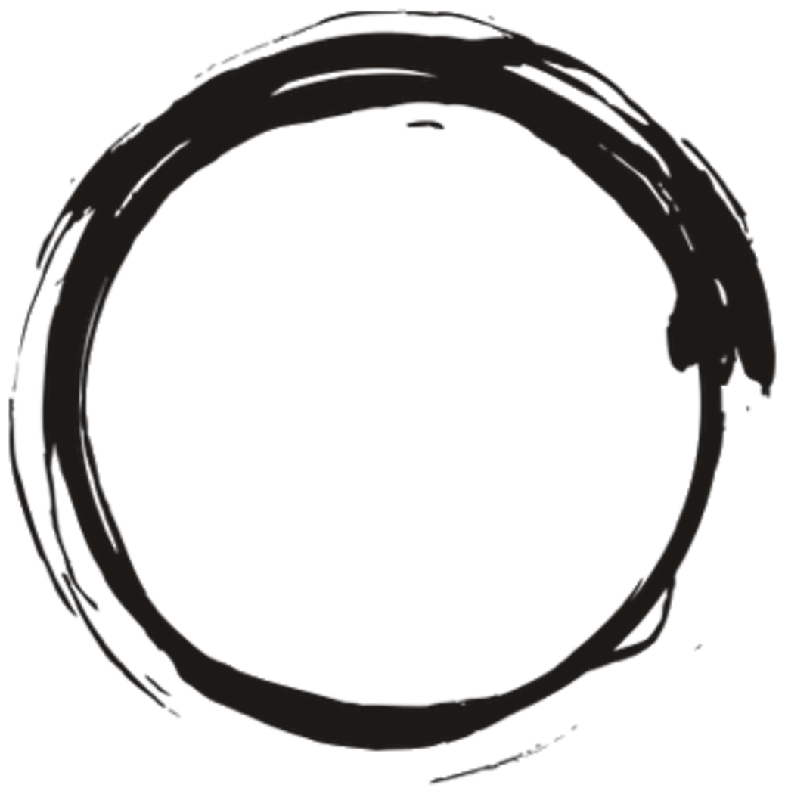

01
De logofamilie
De pretzel is opgebouwd uit een B en een C — Briers-Colla, naar de stichters François Briers en Philomena Colla. Vervorm hem dus nooit: de letters zijn het verhaal.
Vier vormen, één merk. Het woordmerk staat in Bodoni Moda italic 700 — stevige haarlijnen, ook op klein formaat. Kies altijd de eenvoudigste variant die in de ruimte past — het gestapelde logo voor smalle en vierkante vlakken, het horizontale voor brede.
Primair — horizontaal. Standaard voor website-headers, briefpapier, facturen en advertenties.
SVG ↓PNG ↓
Gestapeld
Icoon boven, naam onder. Voor vierkante vlakken: verpakking, etiketten, social posts, gevelbord.
SVG ↓PNG ↓

Gestapeld, wit
Op ink, op foto's en op amber. Nooit het gradiëntlogo op een donkere of drukke achtergrond.
SVG ↓PNG ↓
Icoon alleen
Enkel waar de naam er al staat: app-icoon, favicon, zegel op een zakje.
SVG ↓PNG ↓
Huize Briers
Woordmerk
Voor hele kleine toepassingen en in lopende tekst, waar het icoon zou verdrinken.
Bodoni Moda italic 700
02
Vrije ruimte & formaat
De maat x is de hoogte van het icoon. Houd rondom minstens ½x vrij; niets — geen tekst, lijn of beeldrand — komt daarbinnen.
marge = ½xx = icoonhoogte
gestapeld · zelfde ½xoptisch gecentreerd
Minimumformaten
Gedrukt: horizontaal logo nooit smaller dan 35 mm, icoon nooit kleiner dan 8 mm.
Niet doen
Uitrekken, kantelen of de onderdelen herschikken.
Herkleuren buiten dit palet, of een schaduw of rand toevoegen.
Het gradiëntlogo op ink, amber of een foto plaatsen.
De naam naast het gestapelde logo herhalen.
03
Kleur
Rust en amber zijn accent, geen achtergrond. Een pagina is paper of stone; ink draagt de tekst.
Kleuren (CSS) ↓Kleuren (JSON) ↓
RustAccent, links in het gradiënt
#A8431D
AmberHighlights, rechts in het gradiënt
#E8912E
InkTekst en donkere vlakken
#1C1917
StoneKaarten en panelen
#F3F1EE
PaperBasisondergrond
#FFFFFF
Merkgradiënt
linear-gradient(135deg, #A8431D, #E8912E)
enkel in het logo en op één vlak per drager
Verhouding
70 paper · 20 stone · 7 ink · 3 accent. Zo blijft het rustig en herkenbaar.
Vers uit onze oven
wit op ink · goed
Vers uit onze oven
ink op amber · goed
Vers uit onze oven
amber op rust · nooit
04
Typografie
Bodoni Moda italic spreekt, Instrument Sans doet al het werk. Twee letters, geen derde. Eén display-regel per drager — meer maakt het luid.
Bodoni Moda ↗Instrument Sans ↗Quicksand (Bistro) ↗
Display
Bodoni Moda italic 700
48–72px · lh 1.05 · ls -.01em
Ambacht, opnieuw verteld
Sectiekop
Instrument Sans 700
26–32px · lh 1.2 · ls -.02em
Vandaag beschikbaar
Producttitel
Instrument Sans 600
17px · lh 1.3
Bilzense videe
Lopende tekst
Instrument Sans 400
15–16px · lh 1.6 · max 60ch
Bestel voor 17 u online en haal je brood de volgende ochtend vers op in Munsterbilzen of Bilzen-centrum.
Kleine labelregel
Bodoni Moda italic 500
17px · geen labels
Munsterbilzen, twee winkelpunten
Prijzen & cijfers
Instrument Sans 500
tabelcijfers, zodat kolommen uitlijnen
€ 4,80 · € 18,00
05
Toepassingen
Zo landt het systeem in het echt. Het gestapelde logo doet het werk waar het vlak vierkant is.
Visitekaartje 85 × 55 mm — voor- en achterzijde
bakkerij
bistro
b&b
Nathalie Briers
zaakvoerder
nathalie@huizebriers.be · 089 00 00 00
Familie Briers-Colla, sinds 1966
Klokkestraat 19
3740 Bilzen
Waterstraat 71
3740 Munsterbilzen · ateliers
huizebriers.be
wo — zo open

Etiket, zegel & avatar
sinds 1966
rond etiket ⌀ 40 mm
Het gestapelde logo staat optisch gecentreerd in de cirkel, met een optische marge van minstens een halve icoonhoogte tot de rand. In een cirkel kleiner dan 30 mm: enkel het icoon.
Gevelbord
Sinds 1966
Bakkerij, bistro en B&B — van woensdag tot zondag.
Webheader & prijskaart
BroodPatisserieTraiteurBestellen
Weekendtaart
enkel zaterdag en zondag
€ 18,00
06
Twee takken, één naam
Bakkerij en B&B dragen hetzelfde logo. De tak komt eronder te staan in Instrument Sans, gespatieerd en klein — nooit als tweede logo of in een andere kleur. De bistro heeft een eigen merk: zie 07.
Brood en banketgebak uit natuurlijke streekproducten, met de recepten van 1966.
Twee suites met 4****-comfort in de gerestaureerde paardenstallen.
Sinds 1966 een begrip: begonnen in het Luikse, in 1971 naar Bilzen, in 1981 de ateliers in Munsterbilzen. Vandaag staat de tweede generatie aan het roer — Peter en Nathalie Briers, met Tom Van Aerschot, Carlo Hansen en een goed opgeleid team.
07
Bistro Briers
Een eigen merk, los van Huize Briers: geen pretzel, geen verwijzing. Wel dezelfde hand — de penseelcirkel en de ronde Quicksand-letter blijven, in het amber en zwart van het huis.
Amber op wit (PNG) ↓Amber op zwart (PNG) ↓Wit (PNG) ↓Zwart (PNG) ↓
Amber op zwart — avond, menu's
Wit op amber — vlakken, social

Bistro Briers
Zwart op wit — fax, stempel, één kleur
Wit op zwart — gevel, glas
Zwart op amber — affiches
Amber op stone — print op papier
Volledig amber — kleine toepassingen
Regels
De naam staat altijd op één regel, gecentreerd in de cirkel, nooit erbuiten.
Cirkel en naam niet los gebruiken — de cirkel alleen is geen icoon.
Kleinst: 24 mm breed in druk, 96 px op scherm.
08
Bestanden
SVG voor alles wat schermt of drukt; PNG enkel waar SVG niet kan. Klik om te downloaden.
Alles downloaden (zip) ↓
Kleuren (CSS) ↓
Kleuren (JSON) ↓
Regels voor AI (.md) ↓
AI-pakket (zip) ↓
Huize Briers
Bistro Briers
Bistro Briers, amber op witPNG ↓
Bistro Briers, amber op zwartPNG ↓
Bistro Briers, zwartPNG ↓
Het AI-pakket bevat het script dat uit jouw foto en tekst een afgewerkt beeld maakt, met de logo's en lettertypes erbij. De grote zip bevat alle logo's als SVG en PNG (ook de losse cirkel van Bistro Briers), de kleuren, de huisstijl als tekst en de regels voor sociale media. Lettertypes: zie het onderdeel Typografie.
Huize Briers · huisstijlgids {{ version }} — logo, kleur, type en toepassing vastgeklikt